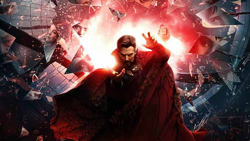
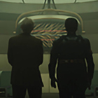
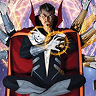

Noticias
La tarea de 'Doctor Strange in the Multiverse of Madness' como secuela directa de varias propiedades de Marvel.

Cómo 'Loki' nos llevó al 'Multiverso de la locura'
The Doctor Is In: Doctor Strange Comics para leer ahora mismo
Benedict Cumberbatch sobre Doctor Strange aprendiendo a renunciar al control y no a 'sostener el cuchillo'
Tilda Swinton y Mads Mikkelsen en Doctor Strange de Marvel Studios